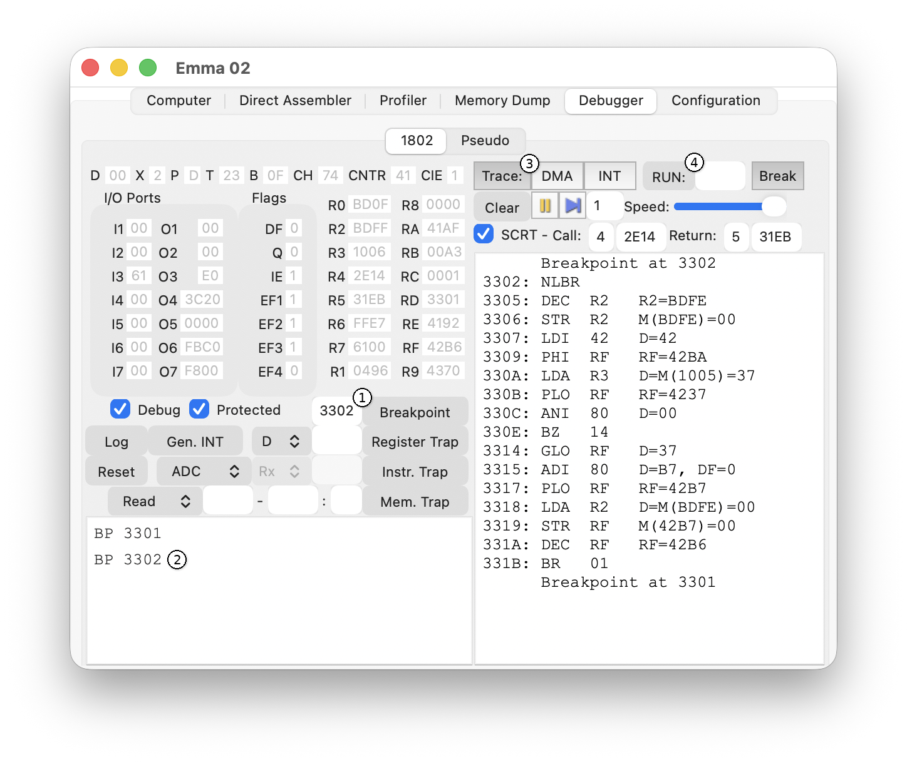

The example below shows the controls needed to trace a section of code.

Set two breakpoints (1): one at the start and one at the end of the section you want to trace. Emulation will stop when the first breakpoint is hit. Delete the breakpoint in the breakpoints area (2) and enable tracing with the Trace: button (3). To start tracing press RUN (4). When emulation stops again, turn off the trace using (3).
Edit breakpoints in the breakpoints area (2) by pressing the delete key to remove a breakpoint or by double-clicking a breakpoint to change its address. On Windows you can also deactivate a breakpoint by unselecting the checkboxes before the address values.
Other trace options that can be used are the Register Trap for a register reaching a specific value, Instr. Trap for a specific instruction being executed or Mem. Trap for a memory address or range being read or written.
For more details see also section Debug 1802